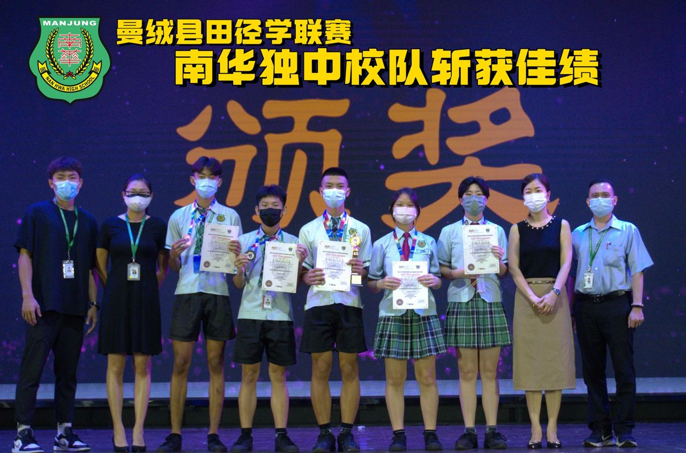
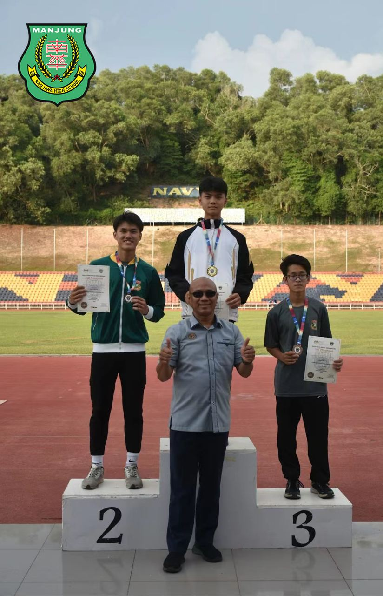
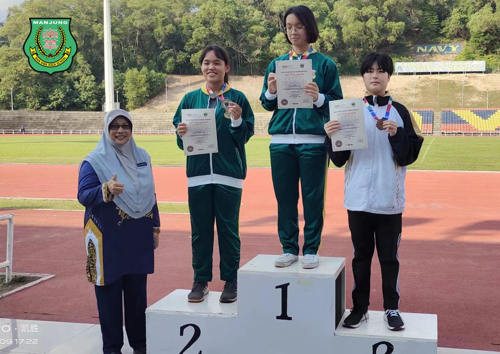
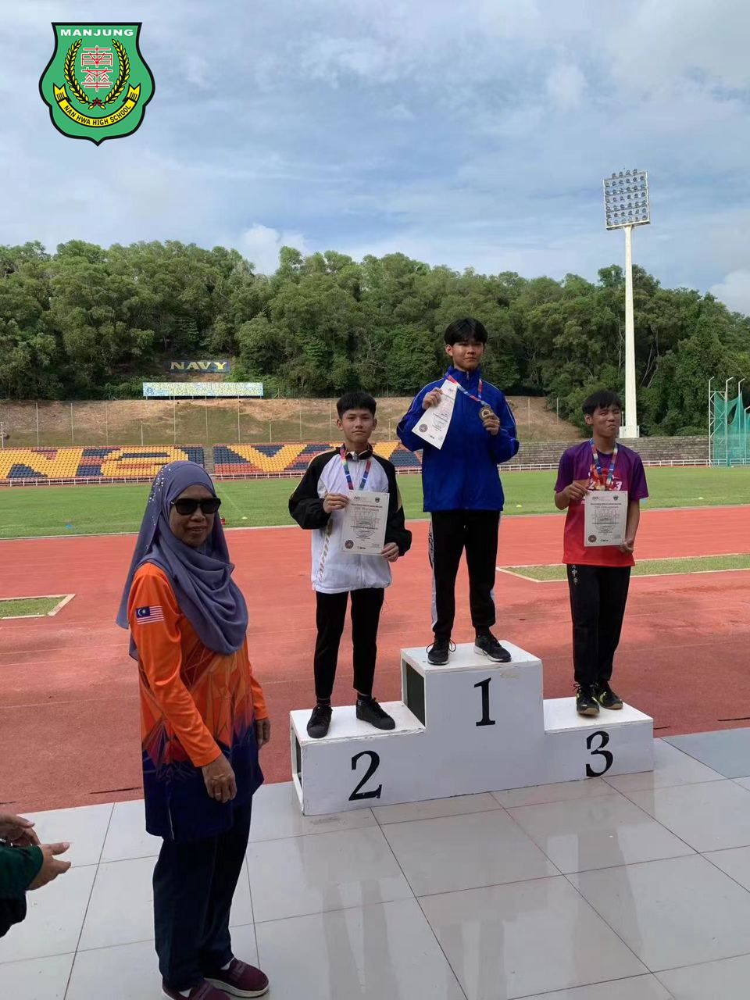
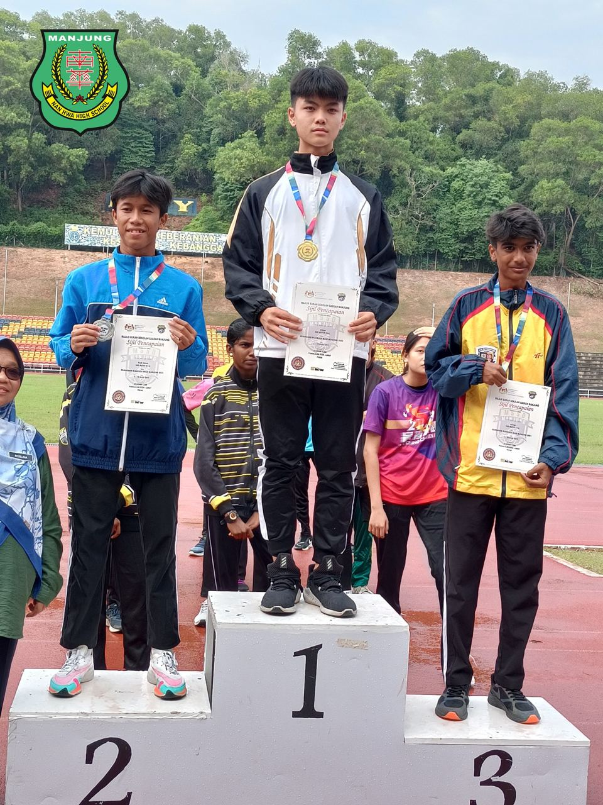
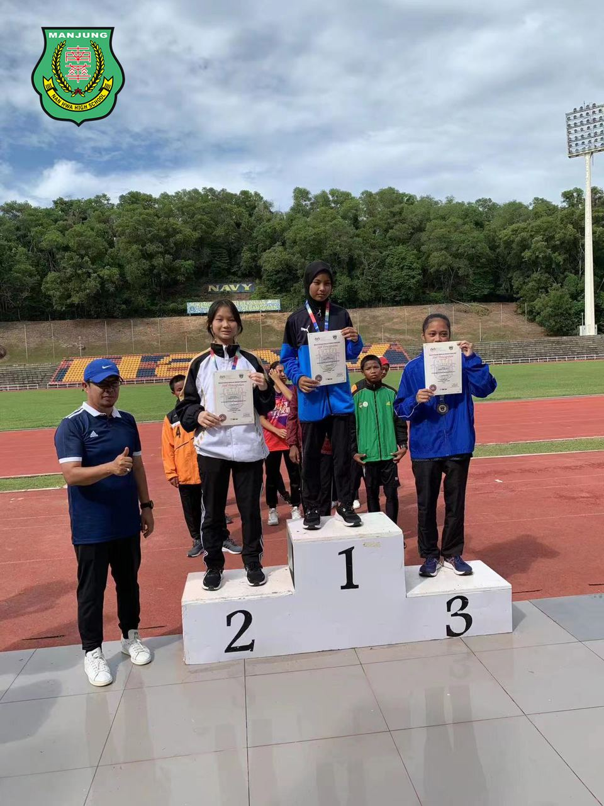
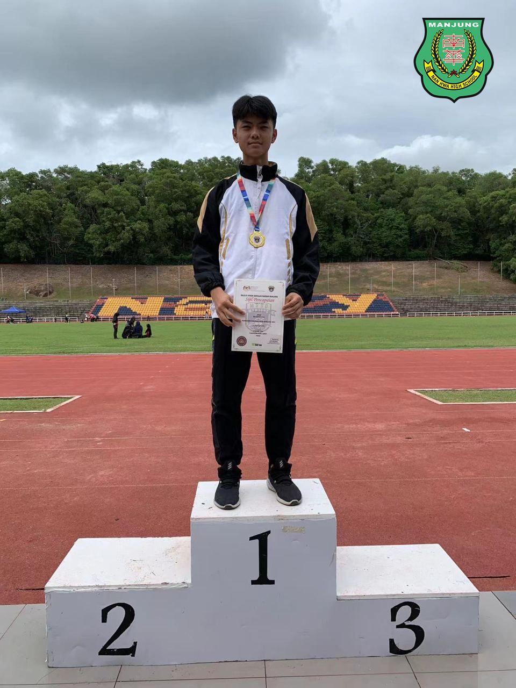
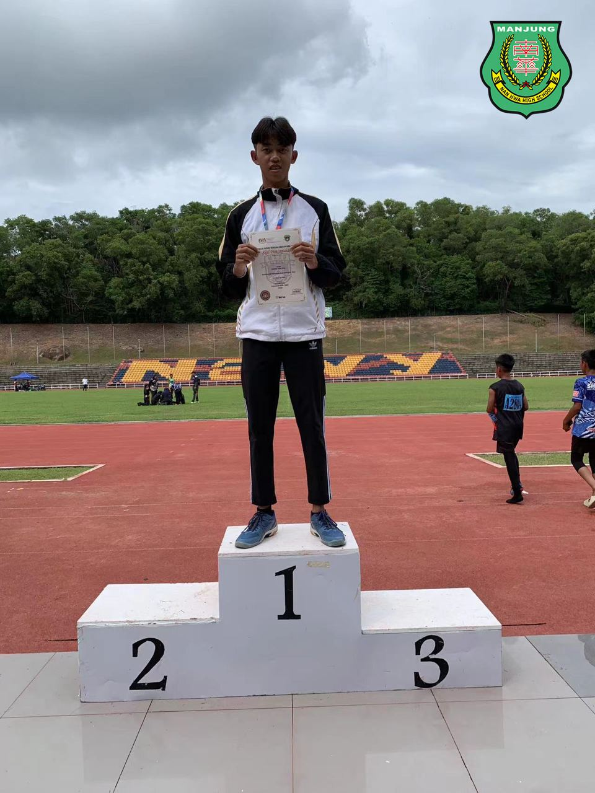

曼绒田径学联赛
曼绒田径学联赛
南华校队斩获佳绩
日前于红土坎军港体育馆举办的曼绒县学联田径赛上，南华独中田径校队展现了出色的表现，斩获了多个令人瞩目的佳绩。张梓乐同学不但摘下三面金牌，更获全场14岁以下最佳男运动员，为学校赢得殊荣。
四项荣誉尽在囊中，南华独中张梓乐同学在14岁以下男子田径项目中展现了令人瞩目的实力，一举获得100米、200米和400米三个项目的冠军。他不仅在这些项目中取得了出色的成绩，还凭借卓越的表现荣获了该年龄段的最佳男运动员奖项。
南华独立中学校长陈丽冰博士对学生的出色表现感到深感欣慰。陈校长表示，这些成绩的取得不仅是学生们努力的结果，也是学校长期以来对综合素质教育的扎实培养的体现。
田径队的负责老师胡晖楎也对学生们的成绩充满了赞赏之情。胡老师强调，这些荣誉背后是学生们坚持不懈的训练和努力，同时也反映了学校对体育精神的重视。体育老师颜国政则充满信心地表示，南华独立中学的学生们展现出了无限的潜力和高度可塑性，他们的未来将会是充满可能性的。
南华独立中学的田径校队在本次曼绒县学联田径赛上的出色表现，为学校赢得了荣誉，并展现了他们在体育领域的实力和潜力。他们的努力和奋斗不仅在赛场上得到了认可，也为整个学校树立了榜样。
以下是南华独中学生在曼绒县学联赛中的成绩：
张蕙欣 15岁以下女生跳远 亚军
许潍杰 15岁以下男生跳远 亚军
苏雅杰 18岁以下男生跳远 冠军
张诗静 18岁以下女生标枪 季军
张梓乐 14岁以下男子100米冠军
14岁以下男子200米冠军
14岁以下男子400米冠军 及
14岁以下最佳男运动员
#学联田径赛 #田径校队
#南华独中 #曼绒 #实兆远







